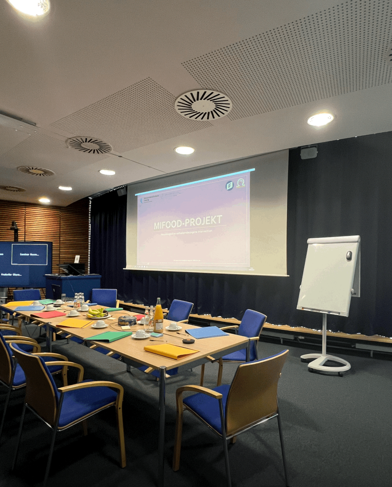
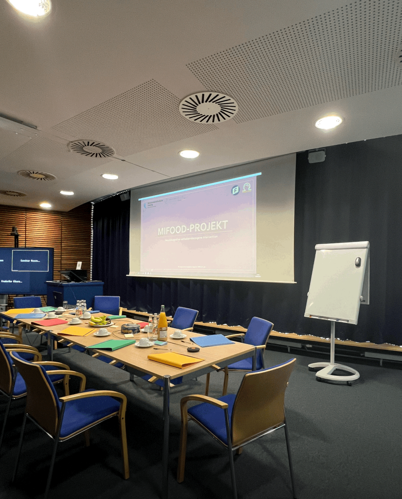
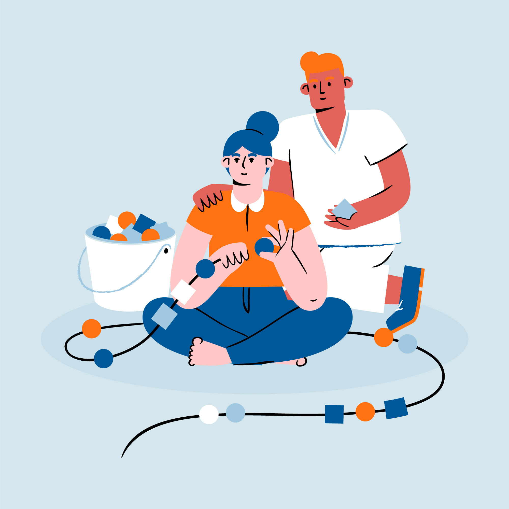

Research Themes

Food & Obesity
Neural and behavioral mechanisms of eating, weight regulation, cue reactivity, and microbiome–brain interactions.

Cognitive Rehabilitation
Cognitive screening and targeted training for attention, memory, and problem-solving functions.

Human Flourishing & Creativity
Dance, mindfulness, psychophysiology, and applied research on creativity, emotion, and psychological wellbeing.